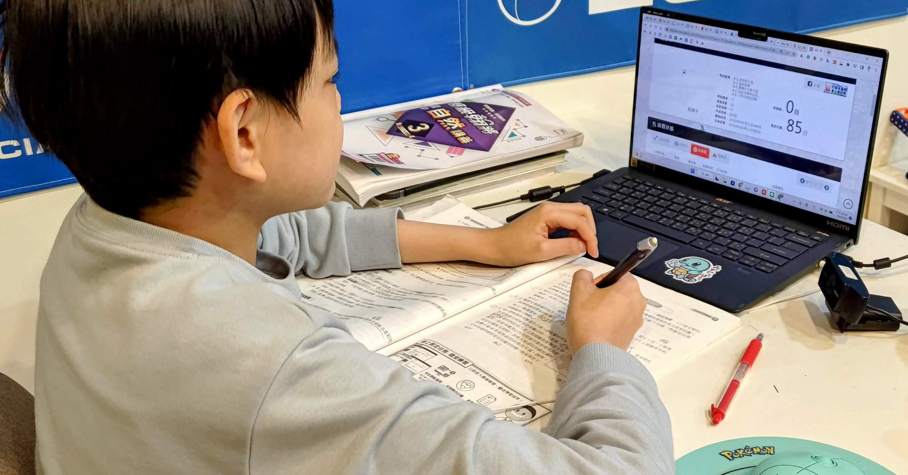
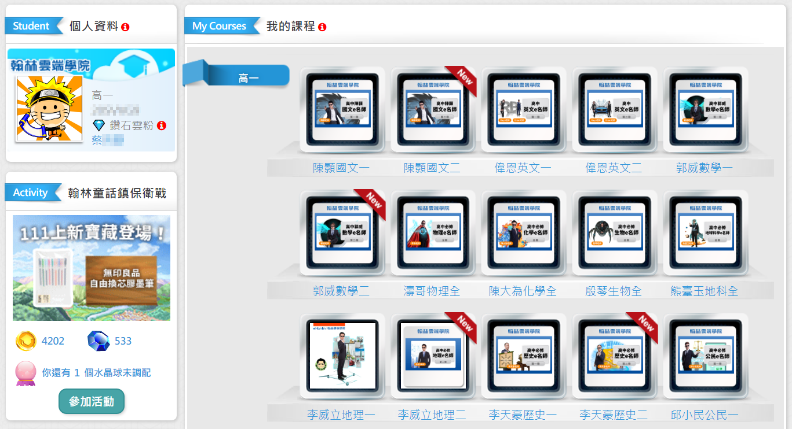
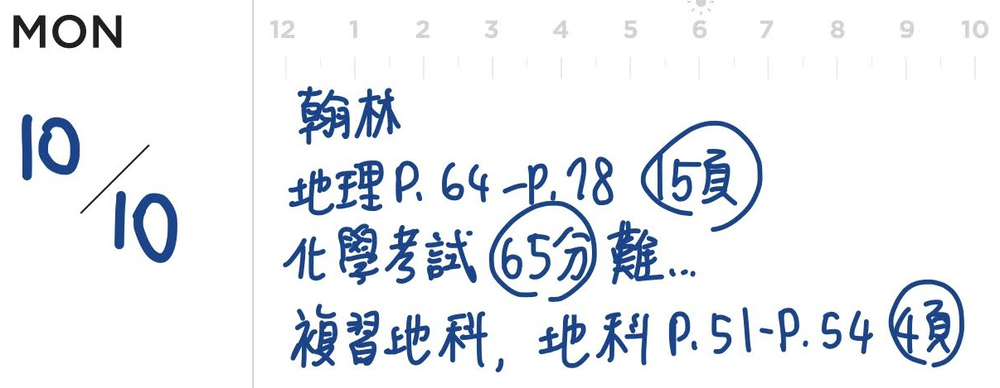
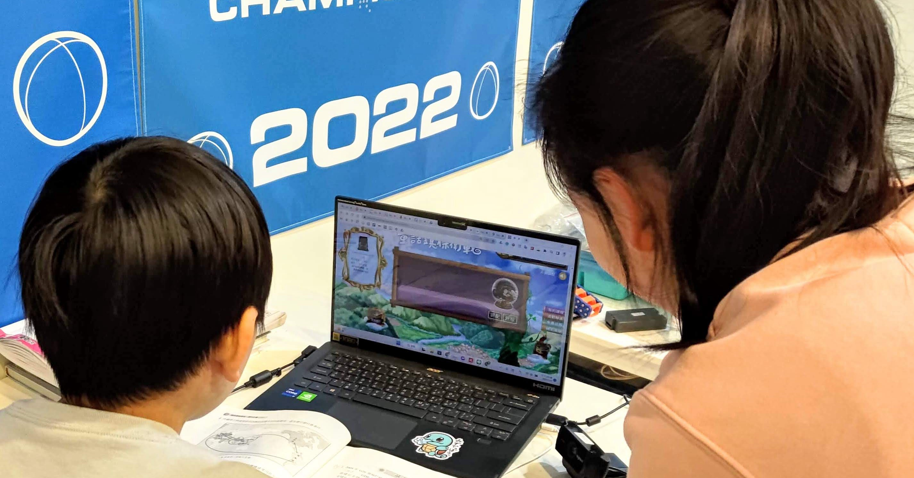

在小孩教養筆記專頁上，有網友詢問，我們家孩子在自己有興趣的領域，如機器人、日文跟數學，都發展得不錯，課業部分不知道怎麼處理？
在國民教育階段，真的從小到大各科都不用家長擔心的人，應該是極少數。自然強的可能國文跟不上，語言強的常常數學就不行，更別說有時候，明明很強的科目，但進到新的章節就完全無法吸收。
我嘗試過蠻多種作法，包括跟老師談、找補習班、一對一家教、線上資源等。目前算是找到一個最適合我們家小孩的模式，也運行好幾年了。以下把這些常見的問題做整理，提供我們的想法跟做法供參考，不見得適合每個孩子，但如果有一部分讀者的狀況適用，也能解決問題，這樣就太好了。
問：我小孩某某科的成績不好，我該怎麼辦？
要跟孩子一起探究，為什麼成績不好。
請小朋友把那些考得不好的考卷拿來我們一起看。記得這時候不要批評他們，因為我們都成年好久了，國中題目對我們當然相對簡單。我們看考卷的目的，是陪他們分析，這些分數究竟是怎麼丟掉的。這個過程重點在於觀察與分類，不是責備。以下是常見的失分原因。
粗心。這是國中時期孩子一定會犯的錯，如果是沒看清楚題目，解法就是請他們在讀題目的時候，必須用筆去畫，因為這樣能有效減低讀題速度，並逼自己跟著筆的速度看完。另外常見的粗心是計算錯誤，小男生尤其會因為算式太潦草，位數沒對齊而錯。這個需要時間，但相對好解決。因為孩子自己也不喜歡因為這樣而丟掉分數。
陷阱題，像是那些在問的時候問一個單位，但到最後，卻忽然要求小孩答另外一個單位的那種。這要帶他讀題，而且教他讀完的時候，要把可能的陷阱圈起來，習慣最後寫下答案時，看一下那些自己圈起來的地方。
最棘手的，就是根本不知道如何解題，不能理解，也沒有足夠的工具。這種狀況最麻煩，因為一來重大考試題目不會特別用陷阱去讓小孩失分，而是真正考能力與理解；二來這裡基礎不穩，未來進度向前的時候，低分會持續到畢業，很糟。
最後一種是我們一定要協助的，我稱這個叫做「知識洞」，你這邊有洞了，要補起來，不然之後就算在上面蓋大樓，一個基礎錯誤，還是會全錯。
問：那麼，知識洞怎麼補？常常我們發現孩子根本沒學會時，學校已經教到下一個章節了，我雖然略懂，但卻不會教，也沒有時間教。
我們嘗試過補習，但補習畢竟還是多人班級，一樣有自己的進度向前。如果孩子已經懂的，一樣要聽一次；孩子不懂的，全班講完都結束了，也不好意思舉手要求老師就為自己再講一次，畢竟其他同學沒有這樣的需求。
而孩子會學不好，除了知識本身可能有難度外，學生跟老師的頻率也有關係，即使是大家都說好的老師，有時跟孩子就是不合。有句俗語說：「孩子不可能從他討厭的人身上學習。」用我自己跟孩子的經驗來看，這句話是對的。
我們也嘗試過一對一家教，或者線上家教。不過因為孩子國高中的時間少，每周一次的家教，有可能問題多到處理不完，也有可能這禮拜沒有問題，時間有時延長、有時取消，對老師不好意思，於是我們現在把一對一教學，保留給孩子強的部份。但補洞，則是用翰林雲端學院。
問：翰林雲端學院？是線上課程嗎？那不就是把學校的內容再講一次而已？跟學校或補習班有什麼不一樣？
是的，翰林雲端學院是線上課程。相當於是把整個學期的課程，變成一段一段的影片，然後在每個章節之後，有隨堂小考，幾個章節後，也有月考、段考、期末考這種比較大範圍的考試可以選擇。
雖然內容可能類似學校或補習班教學，但有個根本的不同，就是東西放在網路上，可以根據自己的需求去選、去看。
已經會的可以跳過，不熟的可以看兩次，沒聽清楚的可以重複聽，平常可以用 2.0 倍速，遇到困難主題再切回 1.0 倍速，甚至按下暫停鍵，稍微想一想。而且在自己家聽，自己習慣的環境最舒適，沒有前面的人擋住，學習的節奏完全在自己手上。
曾經有一陣子，我們有補習也有翰林雲端學院，我問孩子，下學期如果只能選一個的話，你要選哪個？他們都說：「除非是很有趣的老師或同學，不然純為了學習，當然是影片啊，實體課程又不能加速，也不能暫停慢慢想清楚。」
問：可是，線上課程就需要給小孩電腦，他回家後整晚看著螢幕，說實在的，躲在房間裡，是在上課考試，還是在看 YouTube、Netflix，我們也不知道，這樣好嗎？
如果你想知道孩子的進度，翰林雲端學院有 LINE 帳號連動，你可以查詢孩子讀了什麼、考了什麼、多少分。蠻詳細的。
不過，每一個人都需要有些喘息的時間。就像我們上班工作，累的時候也會想要滑一下手機看看 Facebook 或 LINE 上朋友在說什麼。以前沒有網路的年代，人們也會離開座位去閒逛喝飲料，沉澱一下思緒。
這個問題的解法或許不是監控，而是「信任」跟「把人生交給他自己」。
我們要跟小朋友說清楚，他今天為什麼要讀這些書？這些知識的用途是什麼，跟他自己未來人生的關係？讓他知道這都是在為自己打拼。我們今天花錢訂閱了這些教學跟服務，是為了補足自己的弱項。讓自己各科都能夠推進到可接受的狀態。
孩子如果知道是在為自己的人生打拼，而不是我的爸爸媽媽強迫我要看這些課程，那他的動機就會截然不同。在看這些影片的時候，在寫這些題目的時候，在考試有錯誤的題目需要去重新檢討的時候，他都會用一種完全不一樣的角度去吸收、思考、觀察。
我們都知道，內在動機永遠比外在動機要來得持久且強大，孩子總有一天要離家，他們會自己在大學裡生活，自己在社會裡打拼，我們不可能照顧他們一輩子。學會為自己努力、尋找資源、善用資源，這也是教育的一部分。
問：長時間看螢幕會近視吧？你們家小孩沒有近視嗎？
我們家的小孩到目前為止都沒有近視，這有幾個原因。
首先是我們在買筆記型電腦的時候，都是選擇 14 吋以上的筆電，隔著鍵盤，眼睛離螢幕的距離還算遠。近視是跟「近距離」「長時間」用眼有關係。實際上，手寫作業以及長時間讀書，眼睛與紙的距離更近，可能才是孩子近視的主因。
其次，我們的小孩在稍微有點近視傾向的時候，就照醫生建議，點長效散瞳劑，到目前為止五年了，每次眼科回診，都沒有近視。
問：翰林雲端學院的老師好嗎？
我認真的問過小孩，真的每個老師他們都喜歡嗎？他們說，超過一半的老師都蠻有特色，很有趣。有些老師也許稍微比較嚴肅一點，但也不到令人討厭的程度，跟他學知識是沒有問題的。
我後來仔細想過這個問題，認為這有幾個原因。
首先是翰林是做升學教材很久的老廠商，他們挑老師的時候，業內消息一定是掌握很清楚的。其次，敢接下這種任務的老師也有一定的自信，想想，當你今天要把自己的教學錄下來，而且放在網路上，任何人只要有幾千元就可以看，也能對你指指點點的時候，還敢出來做錄影教學的老師，應該都是千錘百鍊的高手。
我曾查過，這些老師有的有自己的補習班，或者長年在補習班上課，除了專業知識沒問題、考試方向熟悉之外，他們也都很清楚該怎麼跟國中生說話，知識要怎麼傳遞，孩子才聽得進去。
如果你還是不確定的話，每個科目都有提供試看影片，這個對於孩子選擇要不要訂閱有很大的幫忙。
我們當大人當久了，並不知道國中生到底在意些什麼，但是小孩直接去看這些教學影片的時候，他會告訴你，他想不想看這老師上課。
想訂，就代表這個老師的上課模式有某些東西，他是喜歡的。因為孩子的詞彙量跟人生歷練不夠，他們看完試看影片，不會說「這個老師說話非常有條理，竟然能夠把複雜知識整理得這麼清楚」，或者「他真不容易，能把嚴肅的主題用有趣的方法說出來」。孩子沒辦法這樣分析，但他們都感覺得到自己喜不喜歡這個人。
問：我看價格好像並沒有很便宜，就這樣子刷卡下去，好嗎？
每個人對於貴或便宜，可能會有不同的評估標準，我提供我的評估標準給你參考。
有人可能認為，不過就是一些線上的影片跟考試，憑什麼收幾千元？但對於我們要解決小朋友的課業問題來說，去補習班費用也是一筆，而且還要來回接送，更別說大堂課就是會有自己的進度，沒辦法針對自己小孩的「知識洞」來加強。除非一對一家教，才有可能這樣個人化。這幾個選項中，翰林雲端學院是相對負擔較少的。
線上課程，可以照自己的進度去挑選補強的內容。比較不熟的，還可以看第二次、第三次。講義跟影片的搭配很不錯。孩子在這個過程中，同時學會自學的能力，自己辨認問題、定義問題、解決問題、追蹤後續。
所以目前我們是把一對一家教的資源，投資在他們最強的領域上，譬如說我兒子的數學，以及我女兒的日文。但如果是學科補強的話，就都是用翰林雲端學院。
這種教學資源，如果有善用、功課有進步的話，其實都不貴。如果你是擔心，這些課程刷卡了以後，孩子沒有時間看，那這個問題可能是孩子的上課、補習跟作業時間排太滿，是時間分配的問題，或許要跟孩子談，那些對他幫助不大，應該取消掉，空出時間來處理更重要的「知識洞」。
我當初是先訂閱一科試試看，想說萬一失敗，也就是幾千元一次的損失而已。但後來就變成訂兩科、訂三科、訂全科，現在女兒讀高中，也都一次訂全科全學年。
問：如果使用翰林雲端學院，我做家長的，該做什麼輔導？
協助建立筆電環境、註冊帳號、耳機跟滑鼠這些硬體，這是一定要的。
開始租用翰林雲端學院之後，我每天晚上都會跟小朋友討論，請他們回顧整天的學習狀況，並寫在家庭專用的聯絡簿，包括他的翰林雲端學院頁數，以及考試的分數。
在這個一天總結時光，我們會詢問他是否喜歡老師，目前的學習有沒有困難，如果考得不好，例如說 65 分好了，我也會問他，那你有把剩下的 35 分都搞懂了嗎？失分的原因有沒有分析出來呢？懂了之後，有沒有再考一次看看。
這個過程一開始孩子不太習慣，但你持續地說五次、十次、五十次、一百次，孩子就會知道，重點不是我考得差，而是我有沒有把丟掉的分數分析好，剩下的 35 分我下次要怎麼拿，看了詳解懂了之後，再考一次能不能 100？
我自己的經驗是，每個孩子在國高中期間，都至少會有幾次嚴重的低分挫折，像是剛上國一的全科、高一全科、數學、自然、社會換主題的時候。但你陪他這樣分析，漸漸地就會發現，低分洞越來越快被補起來。
孩子不只補了知識洞，還知道日後他的人生如果有各種能力洞的時候，自己該怎麼處理。
因為翰林雲端學院的成績，只有自己知道，不像競爭激烈的學校，可能要全班排名、全校排名，可能隔壁同學會來明查暗訪，孩子也能更專注在改進與努力，不用被羞愧感或同儕壓力影響。
問：我看翰林雲端學院裡面好像有遊戲？什麼集點換獎品之類的，那個好嗎？
那個很好。國高中的小孩都很喜歡遊戲化的學習，翰林雲端學院裡面會根據小朋友看影片跟考試的次數，去給與經驗值，最後可以累積到 6 級水晶球，抽一個實體獎品。
那是他們的重要樂趣之一，小禮物像是便利商店奶茶券、各種電子票券，比較特別一點的，拿過手機支架（孩子糾正我說，那是「夏日時光氣囊支架」），或甚至蠻有情調的 3D 月球燈。這些東西價格不高，但對小朋友來說，他長時間的努力，有一點點的累積，最後有機會抽到一個從異世界寄來的實體獎品。那種正向肯定是很不錯的，讓他們在學習的過程，不容易疲倦或感到虛無。
他們兩個到現在，還是會為了開 6 級水晶球而感到興奮。這次兒子抽到桌遊一盒！
問：就你們的使用經驗，翰林雲端學院有什麼缺點嗎？
翰林雲端學院畢竟是要面對全臺灣所有的國高中的學生，所以他在教學上會以「大部份的孩子如果認真學習，都能夠理解」的範圍去做設計。如果要跟一些菁英名校的補充學習教材相比，會發現在這上面比較沒有超級難題。
我說的難題，像是在國中理化的補充，孩子不懂，問我，我也不懂，上網查才發現其實是大學化學系範圍的東西。
我對國英數社自的基礎要求，是合理。孩子並不需要用奧林匹亞或菁英資優班等級去要求。把握核心能力，能考到還不錯的級分，就相當不錯了。這也是比較符合目前升學考試難度與分發制度的策略：盡量每科都平均，而不要有的超強，但有的超爛。
如果還要再說另外一個缺點的話，就是我覺得他們的獎品機制似乎真的太隨機了，沒有配獎。我的兩個孩子，兒子常常抽到好東西，像是剛才說的月球燈、手機支架、桌遊都是他抽到的。但女兒總是抽到他用不到的電子票券，還有虛擬 e 幣、寶石這種小獎。或許資訊系統設定時，稍微配個獎，也可以考慮看看？
問：你剛才說，有些科目你會選擇一對一家教，這部分可以再說明一下嗎？
一對一家教，我是針對小朋友最強的領域，讓他們超越課業的範圍一直往前進。像是數學，我兒子現在小六下學期，但他跟老師在算的部分分式題目，他解不出來的，我也解不出來。而他解得出來的題目，很多我已經不會解了。（奇怪，我真的念過高中嗎？那些怎麼全忘光了）
而我女兒的語言興趣很高，目前是用一對一的線上家教，針對日檢 N1 考試在加強，等日檢 N1 這關考過後，他也會為自己再選擇下個一對一家教的學科，他說有可能會選吉他，或者韓語，就看到時候他選哪一個，我們就陪他找資源。
問：你選擇一對一家教時，會考慮哪些因素？
台語有句話，叫做「先生緣、主人福」。雖然這句話是在說醫生與患者之間的關係，遇到好醫生，是病人的福氣。但我認為在老師這領域也適用，畢竟日治時期「先生」二字，指的就是醫師或老師。
也如同我們剛才說的，孩子不會從他不喜歡的老師身上學到東西。所以在選一對一家教的時候，最重要的是小孩跟這個老師是否合拍。
付費試上一堂課，最重要的觀察，就是孩子下課後想不想繼續上，想的話就付一期的費用，通常是幾個月。但第一堂不用評估孩子有沒有學到東西，只要看孩子下課時的心情就行。因為學習需要時間，可以等一整期幾個月之後，再評估學習成效。
問：你們用了翰林雲端學院之後，學校成績大概如何呢？
因為我們的目標是補洞，用大範圍的多次模擬考比較能有效評估。
姐姐國中時期模擬考，大概就是在班上第 5 到第 6 名附近（班上約 30 人），各科能力平均，沒有特別弱的。雖然不是頂尖，但跟剛開始接觸生物、理化、國文那種挫折比起來，這樣的結果對我們來說已經很好。知識洞有補起來，或許沒有剛鋪的柏油那麼平，但當作每天上學走的路，也很可以。
我兒子則是看著姊姊用，說要開一個自己的帳號，他目前小六，但這幾年他已經把國中三年的內容學完，目前在照自己的步調做總複習。
問：所以如果孩子某個學科不好，我們想要協助他回到中等或中等以上的水準的話，你有什麼建議？
首先要跟孩子一起共同決策，先盤點小朋友到底剩下多少時間可用。先把一些效益不好的活動或課程停掉，然後從各種實體跟線上的可能選擇中去嘗試。
尊重他的直覺跟喜好，然後支持他，持續追蹤後續。
不用急，而是把這樣的狀況，視作帶著他練習成為自己人生主人的過程，怎麼看到知識洞、怎麼尋找資源、怎麼試著補、怎麼評估自己補得好不好。
如果他今天靠著優質的線上課程跟評量，就能補上知識洞，日後缺任何能力，網路搜尋一下，自己安排時間學習，也一樣能搞定。
這是我們在孩子離家前，能送給他，最棒的能力，也將是一輩子受用的能力。
閱讀筆記 / 小孩教養



